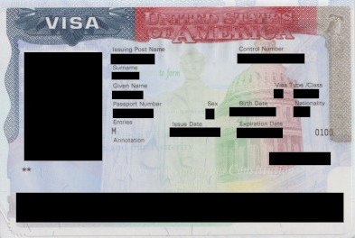

18-Jul-2024: Paid the $185 application fee and scheduled an appointment for the next day for document submission.
19-Jul-2024: Submitted the document (DS-160 confirmation, 1 photo, new passport, passport with existing US visa) at the VAC, New Delhi. You also need to carry a printout of the appointment confirmation page. They will stamp this as an acknowledgement receipt. The officials are very strict about the photo requirement. So, ensure that the background of the photo is white and that it has been shot recently. There is a photo studio, photocopy and other services available right infront of the VAC but the service fee is high. As per the officially available information, it takes 7-10 working days for processing the tourist visa.
22-Jul-2024: The CEAC website says "Application received: Your case is open and ready for your interview, fingerprints, and required documents. If you have already had your interview, please check your status after two business days. If no interview was required, please check back in two business days for the status of your application."
23-Jul-2024: The CEAC website says "Approved: The consular officer has approved your application subject to final processing by the consular section that is necessary to issue your visa. When that processing is complete, the status will change to "Issued". However, a final screening step must still be completed prior to issuance that could lead a consular officer to conclude that you are not eligible for a visa. If that occurs, the consular officer will notify you that your application has been denied and your status will change to "Refused"."
24-Jul-2024: The CEAC website says "Issued: The consular section has completed processing your application and your visa has been issued. If you do not receive your passport and visa within 10 working days, please contact the embassy or consulate where you submitted your application. If at any time additional information is discovered that indicates you may no longer be eligible for a visa, the U.S. government may revoke your visa. See Section 221(i) of the Immigration and Nationality Act."
25-Jul-2024: Passport ready for pick-up.
US visa counterfoil
Remarks- I qualified for interview-waiver based on my valid study visa (F1).
- As the document submission counter was outside the VAC, I could carry my mobile phone and a bag. Although for faster processing, some people who did not have a bag or mobile were also sent inside the VAC.
- 20-Jul-2024 and 21-Jul-2024 were weekends. Hence, the delay in status update.